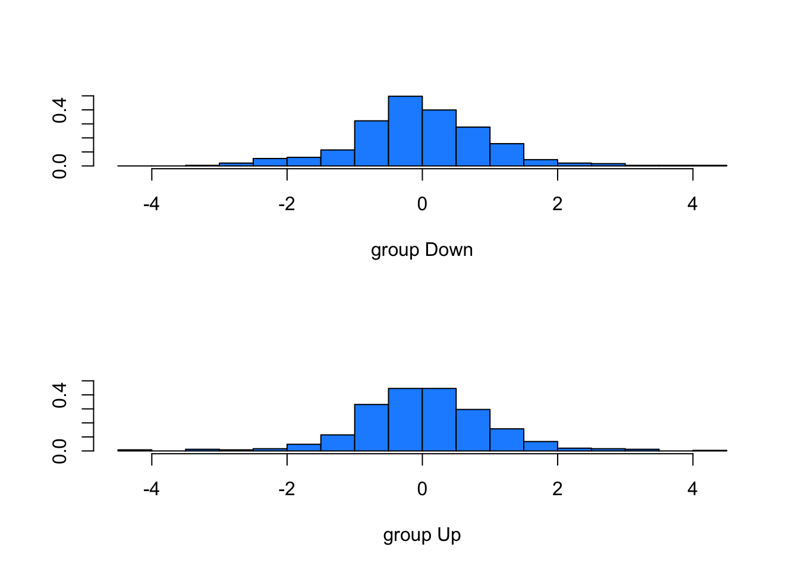

Call:
lda(Direction ~ Lag1 + Lag2, data = Smarket, subset = Year <
2005)
Prior probabilities of groups:
Down Up
0.491984 0.508016
Group means:
Lag1 Lag2
Down 0.04279022 0.03389409
Up -0.03954635 -0.03132544
Coefficients of linear discriminants:
LD1
Lag1 -0.6420190
Lag2 -0.5135293
plot(lda.fit, col="dodgerblue")

Smarket.2005=subset(Smarket,Year==2005) # Creating subset with 2005 data for predictionlda.pred=predict(lda.fit,Smarket.2005)names(lda.pred)
Direction.2005
lda.class Down Up
Down 35 35
Up 76 106
data.frame(lda.pred)[1:5,]
class posterior.Down posterior.Up LD1
999 Up 0.4901792 0.5098208 0.08293096
1000 Up 0.4792185 0.5207815 0.59114102
1001 Up 0.4668185 0.5331815 1.16723063
1002 Up 0.4740011 0.5259989 0.83335022
1003 Up 0.4927877 0.5072123 -0.03792892
table(lda.pred$class,Smarket.2005$Direction)
Down Up
Down 35 35
Up 76 106
mean(lda.pred$class==Smarket.2005$Direction)
[1] 0.5595238
From the three methods (best subset, forward stepwise, and backward stepwise):
Which of the three models with k predictors has the smallest training RSS?
From these methods, best subset selects the model with the smallest training RSS. This method searches through all the subsets of predictors and picks the one with the lowest RSS on the training data.
b. Which of the three models with k predictors has the smallest test RSS?
In order to pick the model with the smallest test RSS, we need to estimate the error. We can do this using validation or cross-validation, or indirectly estimate the error by making an adjustment to the training error to account for the bias that comes from overfitting It also depends on other factors such as number of variables and curve of the data. Cp, AIC, BIC, and Adjusted R2 are all techniques for adjusting the training error and allows us to select amongst models with different numbers of variables.
Cp: This statistic takes on a small value when the test error is also small.
AIC: This statistic is best for a large class of models fit by maximum likelihood
BIC: Dervied from a bayesian perspective. This also takes on a smaller value as the test error decreases. This method adds a heavier penalty on models with many variables which results in smaller model selection compared to Cp.
R^2: this statistic increases as test error decreases.
Application Exercise
#Use the rnorm() function to generate a predictor X of length n = 100, as well as a noise vector ùúÄ of length n = 100.set.seed(1)X =rnorm(100)eps =rnorm(100)# Generate response vector according to model and plot x and yy <-4+9*X +2*X^2+ X^3+ epsplot(X, y, main="Response vs Predictor X", xlab="X", ylab="Response")
# Load leaps package and perform best subset selectionrequire(leaps)
(Intercept) poly(X, 10, raw = T)1 poly(X, 10, raw = T)2
4.17282867 9.51409233 0.86853993
poly(X, 10, raw = T)3 poly(X, 10, raw = T)4 poly(X, 10, raw = T)5
0.06886485 1.90382807 0.55109577
poly(X, 10, raw = T)6 poly(X, 10, raw = T)7 poly(X, 10, raw = T)8
-1.26499408 -0.15569320 0.31986888
poly(X, 10, raw = T)9 poly(X, 10, raw = T)10
0.01627747 -0.02690171
In this we see that the best models have the smallest coefs, signifying a smaller RSS value and larger R squared. We can see that as the variables increase in number, the best model also changes.
5. Repeat 3, using forward stepwise selection and using backwards stepwise selection. How does your answer compare to the results in 3?
# Forward stepwise selectionfit_fwd <-regsubsets(y ~poly(X, 10, raw =TRUE), data =data.frame(y, X), nvmax =10, method ="forward")summary(fit_fwd)
(Intercept) poly(X, 10, raw = TRUE)1 poly(X, 10, raw = TRUE)2
4.17282867 9.51409233 0.86853993
poly(X, 10, raw = TRUE)3 poly(X, 10, raw = TRUE)4 poly(X, 10, raw = TRUE)5
0.06886485 1.90382807 0.55109577
poly(X, 10, raw = TRUE)6 poly(X, 10, raw = TRUE)7 poly(X, 10, raw = TRUE)8
-1.26499408 -0.15569320 0.31986888
poly(X, 10, raw = TRUE)9 poly(X, 10, raw = TRUE)10
0.01627747 -0.02690171
coef(fit_bwd, 10)
(Intercept) poly(X, 10, raw = TRUE)1 poly(X, 10, raw = TRUE)2
4.17282867 9.51409233 0.86853993
poly(X, 10, raw = TRUE)3 poly(X, 10, raw = TRUE)4 poly(X, 10, raw = TRUE)5
0.06886485 1.90382807 0.55109577
poly(X, 10, raw = TRUE)6 poly(X, 10, raw = TRUE)7 poly(X, 10, raw = TRUE)8
-1.26499408 -0.15569320 0.31986888
poly(X, 10, raw = TRUE)9 poly(X, 10, raw = TRUE)10
0.01627747 -0.02690171
Here we see that when using forward stepwise and backwards stepwise slection, we get the same coefs as the Cp, BIC, and R2. This makes sense because we have 10 predictors and the data doesnt follow the conditions that lead to the phenomenon mentioned earlier. These methods can also be more computationally efficient.